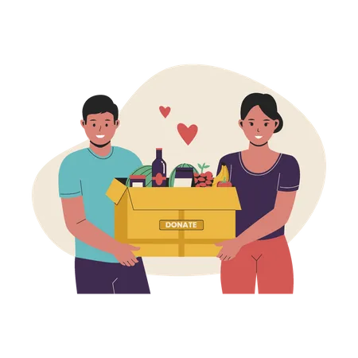

KENAPA HARUS BERDONASI?
Kita ingin meningkatkan kesadaran dan kepedulian masyarakat terhadap donasi Makanan dan Food Waste, mempersuasi masyarakat dalam mengelola makanan sisa sehingga tidak dibuang secara sia-sia atau Food Waste dan mempromosikan tempat donasi sebagai salah satu alternatif dalam mengurangi food waste di Jakarta.
53%
3.935ton
Sampah berasal dari makanan
Sampah makanan di buang perhari